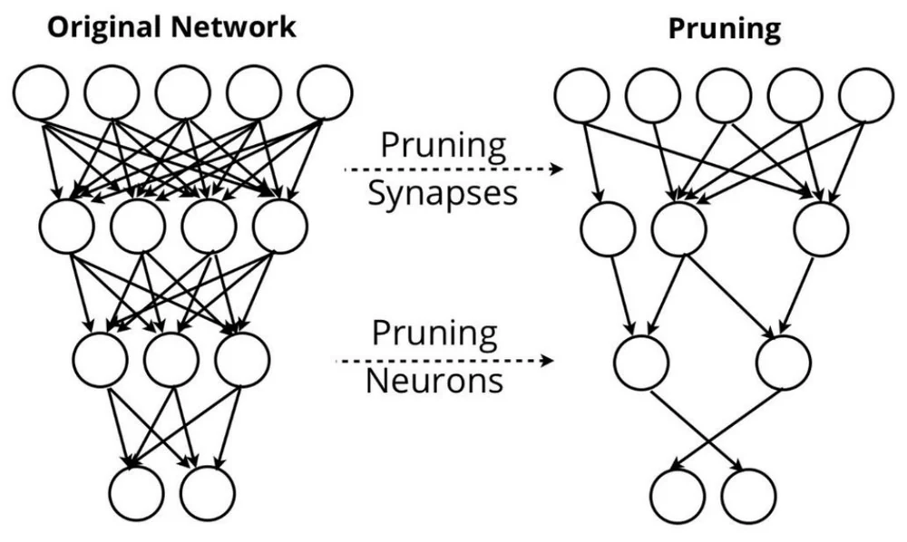
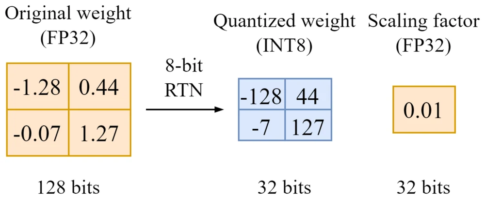
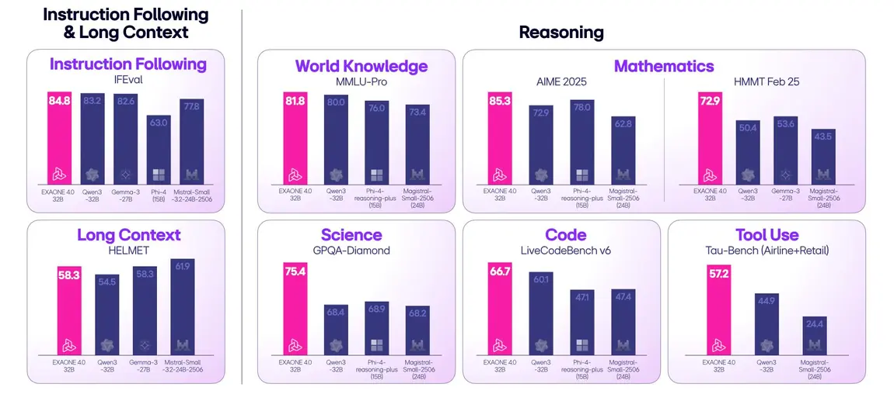
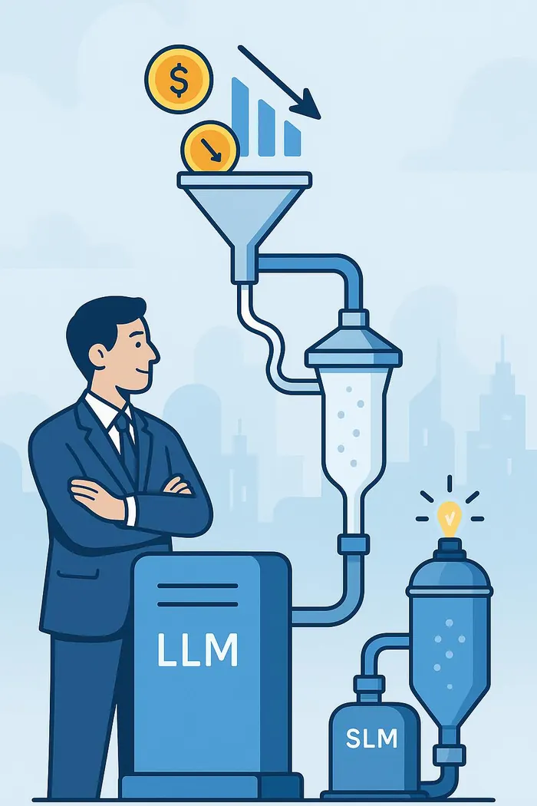
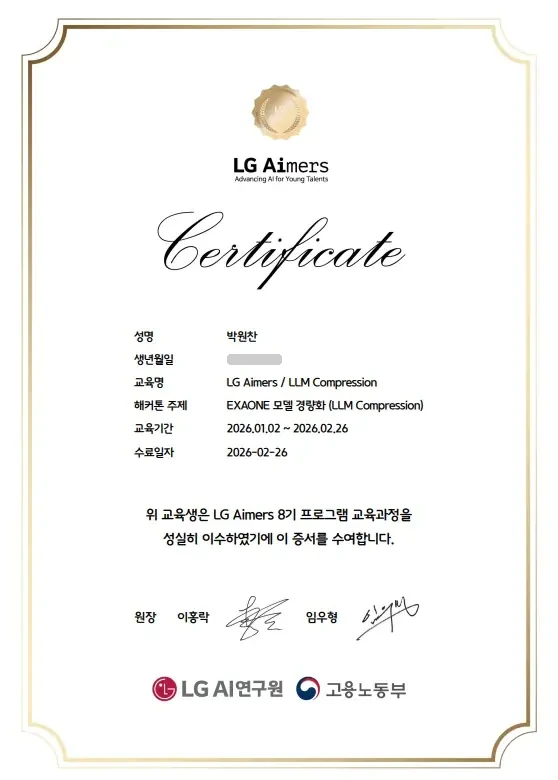

exp/03 · LLM 경량화
EXAONE 경량화
성능은 지키고, 코스트는 줄여라.





The problem
4bit 양자화만으로는 압축률에 한계가 있었습니다.
더 세게 밀어붙이면 품질이 급격히 떨어질 위험이 있었습니다.
The result
프루닝과 양자화, 두 압축 축을 동시에 걸었습니다.
Process
순서가 성능입니다.
- FP16 원본EXAONE 4.0 1.2B에서 출발했습니다. GPTQ baseline은 LB 0.5±0.02.
- SparseGPT로 구조 확정sparsity 35%, 2:4 구조적 마스크로 남길 가중치를 먼저 골랐습니다.
- GPTQ로 오차 재분배확정된 구조 위에서 W4A16 양자화가 남은 오차를 나누도록 했습니다.
- 민감 레이어 살리기baseline에서 뺐던 레이어를 다시 넣고 캘리브레이션을 강화했습니다.
Learnings
겹쳐 쓰는 압축에는 검증이 필요합니다.
겹치면 ablation부터
A만, B만, A+B를 모두 비교해야 조합이 안전합니다.
레이어 민감도는 균일하지 않다
레이어마다 근거를 재고 압축 강도를 정해야 합니다.